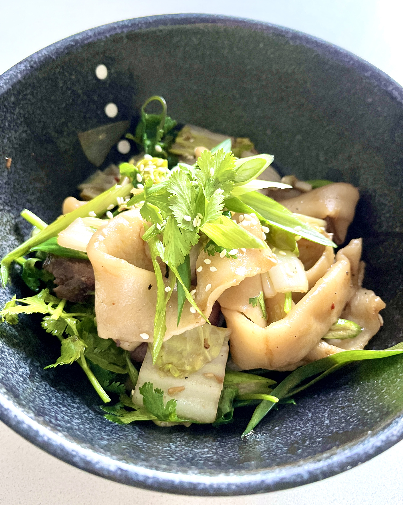

Home
Spicy Hand-pulled Noodles

Description
A life-altering noodle dish that will make your mouth water just by thinking about it.
Ingredients
Noodles
- Bread flour
- Water
- Salt
- Oil
Sauce
- Black vinegar
- Soy sauce
- Sesame oil
- Chili flakes
- Green onion
Steps
- Combine 2 parts flour, 1 part 1 water, and 1/100th part (aka a "pinch" of) salt in a big mixing bowl.
- Mix for about 5-10 minutes with chopsticks (or your hands) until a rough dough comes together.
- Knead the dough for 5-10 more minutes until it becomes more smooth.
- Cover dough and let rest for 30 minutes.
- While dough is resting, combine black vinegar, soy sauce, sesame oil, and chilli fakes into a small bowl for the noodle sauce. Proportions of each are entirely up to your taste.
- Chop up the green onion and add to the sauce.
- After dough has rested, knead again for 5 minutes.
- Check if dough has formed a "gluten window" by holding it up to the light and stretching it thin.
- Separate dough into 5 thick rectangles and cover in about 1 tbsp of your favorite cooking oil to prevent the dough from sticking.
- Cover dough and leave in fridge for at least 1 hour. Can also cover and put sauce in fridge.
- When it's lunch or dinner time, remove from fridge and strength each piece into a noodle using the "bang-bang" technique of slapping it against a flat surface and stretching until it's the desired thin-ness.
- Bring a pot of water with a pinch of salt to a boil.
- Add your stretched noodle and cook for literally 1-2 minutes.
- Serve cooked noodle in a bowl and top with the sauce made earlier.
- Top with more green onion and sesame seeds, if desired.
- Enjoy! The taste will live rent-free in your mind for the rest of your life.